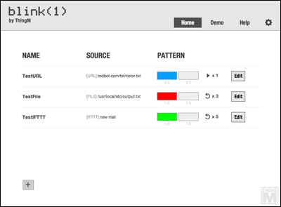
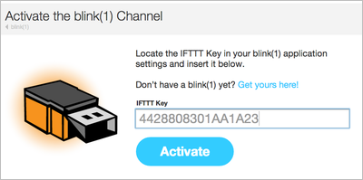
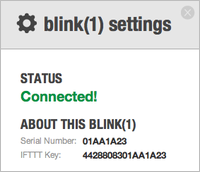
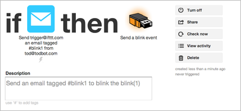
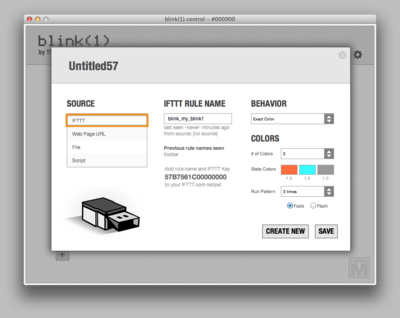

在这个应用的主页，你可以看到你已经设置好的"事件"的简要列表。你可以在这里配置，修改许多触发器。
要新增事件, 轻击 "+" 按钮 -- 它在主页的左侧。
IFTTT 带给你获得访问一系列基于网络事件来触发你的小灯的可能性。
创建一个在IFTTT和你的小灯之间的连接，你需要先创建一个 IFTTT.com的账号，之后点击账号里的小灯[blink(1)]的频道，接着通过你的机器上的密匙来激活你的小灯[blink(1)]频道，你可以在小灯控制器的齿轮图标里找到你的密匙。

现在创建一个IFTTT连接小灯操作的触发事件。这个操作需要一个“规则名称”。选择一个你喜欢的短文字。在小灯控制台里，使用IFTTT作为来源创建一个触发事件，它的文本字串必须和IFTTT的规则名一致，在下面的例子里，这个规则的名字是 "blink_my_blink1"。 （PS：使用IFTTT，你可以关联你的邮件收到邮件，你的Flickr添加了图片，你被人关注了等等事情，但是大多的是国外的提供商，微博是twitter，社交是facebok，所以你也不会太惊喜）


更多待完善...
更多待完善...
更多待完善...
2013-8-6，下午我们翻译了它，船长最早开始了这个想法，接着小梦最早翻译了大部分玩意，接着小约子也跑出来了，然后我们吃饱了，汉化它了，我们可能不小心真的翻译了它，现在它看起来很中文了！
小约子对此的感受：我去洗澡了